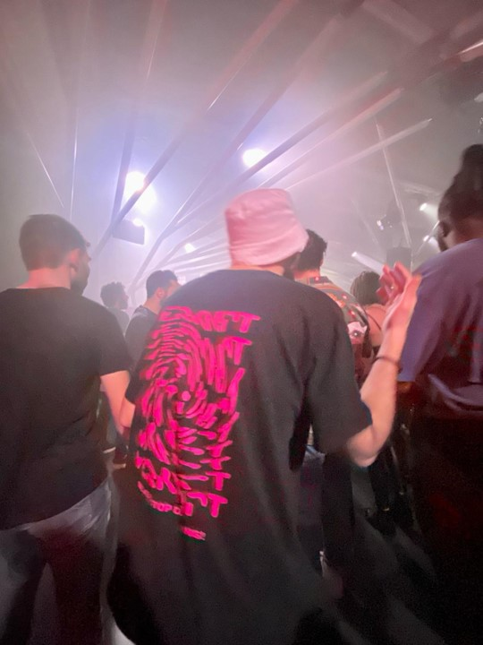
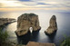

Khaled's Test Area<br><br><br>

<!DOCTYPE html>

<head lang="en">
    <meta charset="UTF-8">
    <meta name="viewport" content="width=device-width, initial-scale=1.0">

    <script type="application/ld+json" id="me">
        {
            "@context": 
            [
                {
                    "schema": "http://schema.org/"
                },
                {
              	    "foaf": "http://xmlns.com/foaf/0.1/",
    			    "foaf:currentProject": {"@type":"@id"}
                }
            ],

    		"@type": "Person",
            "@id": "https://itskhaled.github.io/#me",

            "foaf:givenName": 
            [
                { "@value": "خالد", "@language": "ar" },
                { "@value": "Khaled", "@language": "en" }
            ],
            
            "foaf:familyName": 
            [
                { "@value": "خالد", "@language": "ar" },
                { "@value": "Khaled", "@language": "en" }
            ],

            "schema:birthDate": 
            {
                "@value": "2001-06-06",
                "@type": "schema:Date"
            },

            "schema:jobTitle": "Professional Procrastinator",
            "schema:nationality": "Lebanese",
            
            "schema:memberOf": 
            [
                {
                    "@type": "schema:Organization",
                    "schema:name": "Ghent University"
                },
                {
                    "@type": "schema:Organization",
                    "schema:name": "Student"
                },
                {
                    "@type": "schema:Organization",
                    "schema:name": "Course",
                    "schema:attendee": 
                    {
                        "@id": "https://pietercolpaert.be/teaching/kg/#2023-2024"
                    }
                }
            ],

            "schema:email": "khaled.khaled@ugent.be",
            
            "foaf:knows": 
            [
                {
                    "@id": "https://kurijn.github.io/#me",
                    "@type": "Person",
                    "name": "Kurijn Buys"

                },
                {
                    "@id": "http://lukv.github.io/#me",
                    "@type": "Person",
                    "name": "Luk Verhelst"
                }
            ]
        }
    </script>


</head>

<body>
    <header>

        <section id="Moi">

            <script type="text/turtle" id="Moi">
                
                @prefix kk: <https://itskhaled.github.io/photo-ontology> .
                @prefix foaf: <http://xmlns.com/foaf/0.1/> .
                @prefix owl: <http://www.w3.org/2002/07/owl#> .
                @prefix rdf: <http://www.w3.org/1999/02/22-rdf-syntax-ns#> .
                @prefix rdfs: <http://www.w3.org/2000/01/rdf-schema#> .
                @prefix schema: <http://schema.org/> .
                @prefix geo: <http://www.w3.org/2003/01/geo/wgs84_pos#> .


                <https://itskhaled.github.io/#me> a foaf:Person;
                    foaf:name "Khaled Khaled"@en;
                    foaf:depiction <https://itskhaled.github.io/me.jpg>.

                <https://itskhaled.github.io/me.jpg> a kk:Photo ;
                    kk:hasTitle "Nice rave pic";
                    kk:hasDescription "Me dancing unsuspectingly while being photographed from behind";
                    kk:hasPhotographer _:photographer ;
                    kk:hasTakenDate "2023-02-18"^^xsd:date ;
                    kk:hasLocation 
                    [ 
                            a geo:Point ;
                            geo:lat "48.827543" ;
                            geo:long "2.292538"
                    ] ;
                    foaf:depicts <https://itskhaled.github.io/#me> .

                _:photographer a foaf:Person ;
                    foaf:name "Unknown nice lady" .
            </script>

            <a href="/">

                

            </a>

        </section>
        
        <br>

        <section id="Raouche">

            <script type="text/turtle" id="Raouche">

                @prefix kk: <https://itskhaled.github.io/photo-ontology/#> .
                @prefix foaf: <http://xmlns.com/foaf/0.1/> .
                @prefix owl: <http://www.w3.org/2002/07/owl#> .
                @prefix rdf: <http://www.w3.org/1999/02/22-rdf-syntax-ns#> .
                @prefix rdfs: <http://www.w3.org/2000/01/rdf-schema#> .
                @prefix schema: <http://schema.org/> .
                @prefix geo: <http://www.w3.org/2003/01/geo/wgs84_pos#> .

                <https://www.wikidata.org/wiki/Q12219879> a schema:Landform;
                    foaf:name "Raouché Rocks"@en;
                    foaf:depiction <https://itskhaled.github.io/raouche.jpg>.

                <https://itskhaled.github.io/raouche.jpg> a kk:Photo ;
                    kk:hasTitle "Sunset at Raouché";
                    kk:hasDescription "Photo showing the sunset behind the natural rock arc found at Raouché";
                    kk:hasPhotographer <https://itskhaled.github.io/#me>;
                    kk:hasTakenDate "2020-08-05"^^xsd:date;
                    kk:hasLocation 
                    [ 
                            a geo:Point ;
                            geo:lat "33.8875" ;
                            geo:long "35.475" 
                    ] ;
                    foaf:depicts <https://www.wikidata.org/wiki/Q12219879> .
            </script>

            <a href="https://www.wikidata.org/wiki/Q12219879">

                
    
            </a>
            
        </section>

    </header>
</body>
